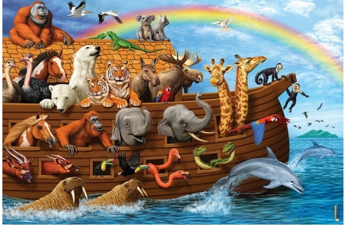

قصة النبي يونس يعرف النبي يونس عليه السلام- باسم يونس بن متى أو ذي النون،
ومتى هي أمه، وهو من أنبياء بني إسرائيل، وتتلخص قصته مع قومه كالآتي:[۱] دعوة
سيدنا يونس لقومه أرسل الله تعالى النبي يونس عليه السلام- إلى قومه الذين كانوا
يسكنون مدينة نينوى في العراق، كي يخرج قومه من الظلام إلى النور، ويرشدهم إلى
عبادة الله تعالى، وظل يونس عليه السلام- يدعو قومه إلى الإيمان بالله تعالى، وكان
عددهم
مئة ألف وأكثر، لكنهم كذبوه ولم يستجيبوا له أبدا، واستمروا في كفرهم وضلالهم.
[۱] وصبر يونس عليه السلام على أذى قومه وعذابهم وكفرهم، لكنهم أصروا على الكفر،
وقد لبث فيهم ثلاثة وثلاثين عاما يدعوهم إلى الإيمان بالله وحده، ولم يستجب لدعوته إلا
رجلين فقط، وأصر باقي القوم على الكفر، فأصاب اليأس يونس عليه السلام- فخرج من
بلدته غاضبا دون أن يأذن الله تعالى له بالخروج.[۱] ركوب السفينة أقبل يونس -عليه
السلام على قوم وركب معهم في السفينة، فلما أصبحت السفينة في عرض البحر،
أصبحت الأمواج تضربها من كل جانب، وتمايلت في جميع الاتجاهات واهتزت كثيرا حتى
كادت أن تغرق، فاجتمع أهل السفينة وقرروا أن يرموا بأحد الركاب في البحر كي يخففوا
الحمل على السفينة، فأجروا قرعة كي يقع الاختيار على شخص معين بحياني تام، ووقعت
القرعة على يونس عليه السلام-، لكن أهل السفينة التمسوا فيه الصلاح والخير، فأعادوا
القرعة ثلاث مرات متتالية فوقعت على يونس -عليه السلام-، فلم يجد يونس عليه السلام-
أي حجة له سوى أن يلقي نفسه في البحر، لكنه كان يملك يقينا أن الله تعالى سينقذه من
الغرق.[۱] يونس في بطن الحوت فور إلقاء يونس عليه السلام- لنفسيه في البحر، التقمه
حوت، فأصبح في بطن الحوت يعيش في ثلاث ظلمات، هي ظلمة الحوت وظلمة البحر
وظلمة الليل، فظن أنه هالك لا محالة، لكنه بقي في الحوت كما يبقى الجنين في بطن أمه،
&وذلك من عطف الله تعالى ورحمته، حيث بقي في بطن الحوت ثلاثة أيام، وكان يسمع
أصواتا غريبة لم يفهم منها شيئا، فأوحى الله تعالى إليه بأن هذا هو صوت تسبيح
مخلوقات البحر، فأصبح هو أيضا يسبح الله ويقول: {لا إله إلا أنت سبحانك إني كنت من
الظالمين}. [۲][۱] إنبات اليقطين ليونس أمر الله تعالى الحوت أن يقذف النبي يونس -عليه
السلام-، فقذفه على اليابسة، وأنبت الله له شجرة يقطين كي يستظل بظلها، ويأكل من
ثمارها، حتى أنجاه الله تعالى وأعاد له صحته، فعاد إلى قومه ووجدهم مؤمنين موحدين، إذ
يقول الله تعالى في قصة النبي يونس عليه السلام: {وذا النون إذ ذهب مغاضبا فظن أن لن
نور عليه فنادى في الظلمات أن لا إله إلا أنت سبحانك إني كنت من الظالمين).[۲][۱] إن
العبرة المستفادة من قصة سيدنا يونس في قصة النبي يونس عليه السلام- عبرة عظيمة،
وهي أن المؤمن يجب أن يصبر على الدعوة والأذى، وألا يفعل شيئا إلا بأمر الله، كما أن
الله ينجي أولياءه وينقذهم في جميع أحوالهم، وكل ذلك بإذنه
لقصص الانبياء-للاطفال
قصة النبي محمد
مولد النبي محمد خير البرية من هي أم النبي؟ بدأت القصة عندما تزوج عبد ا
الله
بن عبد
المطلب بأمنة بنت وهب وحملت من ذلك الزواج، فلما كانت في شهرها الثاني توفي زوجها
عبد الله وبقيت وحيدة في هذه الحياة، ودارت الأيام وجاء وقت ولادتها فولدت في دار أخي
زوجها أبي طالب وقد كان ذلك في عام 571 للميلاد.[۱] فرح الأمة بقدوم النبي محمد من
هو الذي سمى النبي؟ ولما ولدت آمنة وانتهى الأمر بعثوا بخبر إلى جد الصبي عبد المطلب
يخبرونه بأن آمنة قد ولدت صبيا جمي، ففرح جد الصبي فرحا عظيما وقال سنسميه
محمد، ومع أن ذلك الاسم لم يكن القوم يعرفونه ولكن الله يريد لذلك أن يحصل فألهم الجد
بهذا الاسم، وقد فرح عمه أبو لهب كذلك بولادته فرحا كبيرا .[۲] البحث عن مرضعة للنبي
محمد من هي أول مرضعة للنبي؟ وكانت عادة العرب في ذلك الوقت ألا ترضع المرأة ابنها،
فكانت أول امرأة ترضع النبي -عليه الصلاة والسلام- جارية أبي لهب واسمها ثويبة، ولكن
لا بد أن يبعث الأهل ابنهم إلى البادية؛ حتى ينشأ قوي الجسم ففي البادية تكون الصحراء
التي تمتاز بالهواء النقي والهدوء ودسامة ألبان المواشي، وكان أهل البادية كذلك يتمتعون
بلغة فصحى قوية أكثر من لغة المدينة، فجرى البحث عن مرضعة للطفل محمد عليه الصلاة
والسلام.[۳] ولكن المرضعات لم يكن يرغبن بطفل يتيم؛ لأن المرضعة تريد ولا يكرمها والده
بالمال والهدايا ومحمد لا والد له ليكرم المرضعة، ولكن أخيرا قبلت واحدة أن تأخذ الطفل
محمد -عليه الصلاة والسلام وكان اسمها حليمة السعدية.[۳] موت والدة النبي كيف ماتت
آمنة بنت وهب؟ وبعد أن انتهت فترة رضاع النبي محمد - عليه الصلاة والسلام- من عند
حليمة السعدية أعادته أمه آمنة إلى بيتها، وصارت ترعاه أحسن رعاية وفي يوم من الأيام
أرادت أن تخرج آمنة إلى زيارة أخوال أبيه وهم بنو النار وأخذت معها طفلها -عليه
الصلاة والسلام- وجاريتها، ولما عادت من دار أخوال والده توفيت في الطريق وعاد النبي
صلى الله عليه وسلم- وحده دون أمه لا يعلم ما المصير الذي ينتظره في قادم الأيام.[4]
موت جد النبي وكفالته من أخذ النبي بعد عبد المطلب؟ لما ماتت أم النبي -عليه الصلاة
والسلام- كانت الكفالة لجده عبد المطلب، وكان عبد المطلب يحب النبي محمد - عليه الصلاة
والسلام- حبا عظيما ويكرمه كثيرا، ولكن ما لبث أن صار عمر النبي -عليه الصلاة
والسلام- ثماني سنوات حتى توفي جده عبد المطلب الذي كفله، وصارت الكفالة إلى عمه
أبي طالب، وكان عمه ليس كثير المال ولا كفل رسول الله -صلى الله عليه وسلم- بارك الله
في رزقه وكان أبو طالب يحب النبي -عليه الصلاة والسلام- حبا كبيرا ويعطف عليه كثيرا .
[2] رعي النبي للأغنام ما أول مهنة عمل فيها النبي؟ لما كبر النبي -صلى الله عليه وسلم۔
وصار رجلا يستطيع العمل اختار مهنة رعي الأغنام، ولم يكن النبي محمد -عليه الصلاةوالسلام- هو النبي الوحيد الذي رعي الأغنام بل كل الأنبياء اشتغلوا في رعي الأغنام،
فكان يخرج رسول الله -صلى الله عليه وسلم- في أغنام الناس ويأخذ عن كل شاة قيراط
والقيراط هو جزء من الدرهم.[6] عمل النبي في التجارة كيف كانت رحلة التجارة الأول
التي خاضها النبي؟ انتشرت أخبار صدق رسول الله -صلى الله عليه وسلم- وأمانته في
أرجاء مكة المكرمة، فلما وصل الخبر إلى خديجة بنت خويلد وهي صاحبة المال الكثير
أرادت أن يخرج بمالها في تجارة إلى الشام، وبعثت إلى رسول الله -صلى الله عليه وسلم۔
بغلام لها اسمه ميسرة، وكان ميسرة يلازم النبي -عليه الصلاة والسلام- طوال الرحلة
فرأى من صدقه في العمل وأمانته الكبيرة الكثير، وقد ربح رسول الله -صلى الله عليه
وسلم- من الت111جارة ربا كبيرا.[7] زواج النبي من السيدة خديجة بنت خويلد من هم أولاد
النبي؟ كل إنسان يحب الشخص الصادق الأمين ولا رأت خديجة بنت خويلد الأرباح
العظيمة التي جناها رسول الله -صلى الله عليه وسلم- في تجارتها، بعثت إليه وخطبته
لنفسها، فوافق النبي -عليه الصلاة والسلام على الزواج منها وخطبها من عمها، وقد
أنجب من خديجة كل أولاده ما عدا إبراهيم، فكان له أربع بنات وهن: زينب ورقية وأم كلثوم
وفاطمة، وكان له من الأولاد القاسم وعبد الله ولكن ماتوا وهم صغار في السن.[۷] نزول
الوحي على النبي ما أول آية نزلت من القرآن؟ بعد أن تزوج رسول الله -صلى الله عليه
وسلم- من خديجة -رضي الله عنها- صار يذهب إلى غار حراء ويتعبد ربه هناك كثيرا ،
وكان يعبد ربه على دين إبراهيم عليه السلام، ولم يسجد لصنم أبدا، وبينما هو كذلك في
غار حراء إذ نزل عليه الوحي وقال له اقرأ والرسول يخبره أنه ليس بقارئ، فيعيدها عليه
الوحي والرسول يقول ما أنا بقارئ فقال له جبريل: {اقرأ باسم ربك الذي خلق * خلق
الإنسان من علي * اقرأ وربك الأكرم * الذي علم بالقلم * علم الإنسان ما لم يعلم).[۸] فرجع
الرسول -صلى الله عليه وسلم- إلى بيته خائفا.[۹] فلاقته زوجه التي ترأف به وترحمه
وصارت تواسيه وتقول له أنت صاحب الأخلاق الطيبة وأنت الصادق الأمين الذي لا يقترب
من المعاصي والذنوب، والله لن يؤيذيك ولن يخذلك.[۹] بعثة النبي محمد خير البرية ماذا
قال ورقة بن نوفل للنبي؟ لما حدث ذلك مع رسول الله -صلى الله عليه وسلم- أخذت خديجة
الرسول إلى ابن عمها ورقة بن نوفل وقمم له ما صار معه، فقال له ورقة: هذا الذي نزل عليك
هو جبريل الذي نزل على كل الأنبياء، وسيقاتلك قومك كما قاتلت الأقوام من قبل أنبياءها،
وسيخرجونك من مكة وتمنى ورقة بن نوفل أن يكون شابا حتى يناصر النبي عليه الصلاة
والسلام.[۹] دعوة النبي لأهله وأصحابه من أول من الرجال؟ بدأ رسول الله -صلى الله
عليه وسلم- يدعو إلى الإسلام في الخفاء، فأول من آمن به زوجته خديجة رضي الله عنها،
وآمن به ابن عمه علي بن أبي طالب وكذلك زيد بن حارثة وحاضنته أم أيمن وكلهم هؤلاء من
أهل بيته، وأول من أجابه من غير أهل بيته أبو بكر الصديق رضي الله عنه، وبدأ يدعو من
حوله من الذين يثق بهم ومن بينهم عثمان بن عفان رضي الله عنه.[۱۰] دعوة النبي لأهل
*
*
،هي
مكة كافة من أشد الأشخاص عداوة للنبي؟ بعد مضي وقت طويل على الدعوة سرا وإيمان
ما يقارب الثلاثين إنسانا أنزل الله أمره لرسوله - عليه الصلاة والسلام- بأن يجهر بالدعوة
ويدعو كل الناس، وهنا تحول الدعوة من السرية إلى الجهرية، فصعد الرسول -صلى الله
عليه وسلم على جبل في مكة اسمه الصفا، وبدأ بدعوة الناس للإيمان وتحذيرهم من
الهلاك، ولكن نفوس أهل قريش كانت قد امتلأت بالكفر، وبدأ أهل قريش يؤذون الرسول
-صلى الله عليه وسلم- وأشد من آذاه أبو جهل وأبو لهب.[۱۱] هجرة المسلمين للحبشة ما
أول هجرة للمسلمين؟ لما اشتد أذى المشركين لرسول الله -صلى الله عليه وسلم- أشار
النبي على أصحابه أن يخرجوا من مكة ويذهبوا إلى الحبشة حتى يأمنوا على دينهم،
وهاجر وقتها عشرة رجال وخمسة نساء ومن بينهم عثمان بن عفان وزوجته بنت رسول الله
صلى الله عليه وسلم- رقية، وسافروا عن طريق البحر ولم يبق مع رسول الله -صلى الله
عليه وسلم- من المؤمنين سوى القليل. [۱۲] مقاطعة المسلمين كيف قاطع المشركون المسلمين؟
الما تضايقت قريش من دعوة النبي -صلى الله عليه وسلم- ولم يستطيعوا إيقافها اتفقوا
جميعهم على حصار بني هاشم وإخراجهم من مكة وعدم مبايعتهم أو مساعدتهم بشيء
وكان ذلك وخرجوا جميعا إلى شعب أبي طالب، ولشدة كره قريش للنبي -عليه الصلاة
والسلام- فإنهم قاطعوا المسلمين والكافرين من بني هاشم، ولم يفرقوا بينهم حتى يجمعوا
أمرهم ويسلموا محمد -عليه الصلاة والسلام- للقتل.[۱۳] وفاة زوجة النبي وعمه لماذا توفی
أبو طالب وخديجة؟ شاء الله أن ينتهي الحصار عن المسلمين، ولكن قلة الطعام والشراب
خلفت آثارا كبيرة على صحة الكبار في السن، فتوفي أبو طالب عم النبي -صلى الله عليه
وسلم- ثم توفيت خديجة -رضي الله عنها- بعد عمه بثلاثة أيام وحزن النبي -صلى الله عليه
وسلم- حزنا شديدا؛ فالآن صار وحيدا بعد موت زوجته وعمه وصار قلبه حزينا جدا على ما
حدث.[14] رحلة النبي إلى الطائف هل ساعد أهل الطائف النبي؟ بعد موت عم النبي
صلى الله عليه وسلم- صار كفار قريش يؤذون النبي عليه الصلاة والسلام- أكثر بكثير
فأبو طالب كان يحميه بإذن الله، فخطر في بال النبي -عليه الصلاة والسلام- أن يذهب إلى
الطائف ويسأل أهلها أن يجلس عندهم ويدعو إلى الله، ويحموه من أذى قريش لكن زعماء
الطائف رفضوا ذلك، ودفعوا لصبيانهم الصغار أموا؛ حتى يلحقوا رسول الله -صلى الله
عليه وسلم- ويرموه في الحجارة وغيرها، وعانی رسول الله -صلى الله عليه وسلم- ألما كثيرا
وقتها.[۱۰] معجزة الإسراء والمعراج ما معنى الإسراء والمعراج؟ حزن النبي -صلى الله عليه
وسلم- فهو الآن بلا زوجة تساعده وبلا عم يحميه وأهل الطائف لم يساعدوه وقريش زاد
أذاها له، ولكن الله -تعالى- لا يترك نبيه لوحده أبدا بل آنسه وخفف عنه من مصائبه فكانت
رحلة الإسراء والمعراج، وأما الإسراء فقد أسرى الله بمحمد من مكة المكرمة إلى المسجد
الأقصى في فلسطينن ثم صعد إلى السماء السابعة بجسده کاملا يجتاز الفضاء
والمجرات، وكل شيء ليصعد السماوات كلها ويرى الجنة والنعيم فيها ويرى الملائكةوالأنبياء.[۱۹] هجرة النبي إلى المدينة المنورة أين اختبأ النبي مع أبي بكر في الطريق
للمدينة؟ وأخيرا فقد أوجد الله طريقا النبيه -عليه الصلاة والسلام- حتى يخرج منه، فكانت
المدينة المنورة هي المأوي الجديد للمسلمين، فهاجر أكثر المسلمون بداية حتى أذن الله لنبيه
-عليه الصلاة والسلام- بالخروج من مكة هو وأبو بكر الصديق رضي الله عنه، وكانت قريش
قد تآمرت على قتل النبي عليه الصلاة والسلام، فذهبوا خلفه وخلف أبي بكر فاختبأ النبي
وأبو بكر في غار ثور، حتى كفاه الله المشركين وخرج بعدها النبي -صلى الله عليه وسلم۔
مع أبي بكر ووصلوا إلى المدينة المنورة بسلام.[۱۷] تأسيس دولة الإسلام على ماذا قامت
دولة الإسلام؟ بدأ رسول الله -صلى الله عليه وسلم- بالتأسيس الدولة الإسلام الجديدة، فقد
جاء كثير من الأشخاص المهاجرين إلى المدينة وليس معهم لا أموال ولا أي شيء يعينه في
البلد الجديد، فأسس رسول الله -صلى الله عليه وسلم- دولة الإسلام الجديدة على التعاون
و الإخاء فصار المهاجر أځا للأنصارين فالأنصاري يعطيه نصف ماله ويقتسم معه كل
شيء، وذلك امتحان للأنصاريين حتى يصبح الله ورسوله وأوامرهم أحب إليهم من كل
شيء. [۱۸] قتال النبي وغزواته ما أول غزو عظيمة للمسلمين؟ استقر النبي -عليه
الصلاة والسلام والمسلمون في المدينة المنورة ويجب المحافظة على المدينة من الأعداء
والمحافظة على الإسلام من والمسلمين، فأذن الله بقتال الكافرين ففي البداية كان القتال
غير مأذوني به للمسلمين، فصارت كل مواجهة بين الكفار والمسلمين والنبي -صلى الله عليه
وسلم- يكون موجودا في ا ذلك القتال اسمها غزوة، وأول غزوة شهيرة كانت بين الكفار
والمسلمين غزوة بدر التي انتصر فيها المسلمون، وتتالت الغزوات بعدها فكانت غزوة أحد
وغزوة الخندق وغزوة بني قريظة وغيرها.[۱۹] وفاة النبي محمد خير البرية متى توفي
النبي؟ لا أدى رسول الله -صلى الله عليه وسلم- الأمانة كلها وصار الإسلام عزیزا قويا
خيره الله بين أن يبقى حيا في الدنيا أو يموت، فاختار النبي -صلى الله عليه وسلم- الموت
ومرض مرضا شديدا وبقي عند عائشة -رضي الله عنها- تعتني به، ولكنه عليه الصلاة
والسلام قد توفي في الثالث عشر من ربيع الأول وحزن عليه أهل المدينة حزن عظيما.[۲۰]
لقصص الانبياء-للاطفال
قصة النبي صالح
في منطقة كانت تعرف باسم الحجر، نستطيع الوصول إليها إذا قمنا بالسفر من السعودية حتى
الأردن بالسيارة، لأنها بالطريق، أرسل الله نبيه صالح عليه السلام الى احدى القبائل العربية التي
كانت تعيش هناك. عاش هؤلاء القوم في تلك المنطقة، وبنوا الكثير من المباني العالية والكبيرة. لأنهم
كانوا يجيدون جدا ماهرون في البناء. فعاشوا في ترف شديد، فهم يملكون الطعام، الشراب،
اللباس الجيد والمسكن الجديد. عندما قام سيدنا صالح بدعوتهم إلى عبادة الله والإيمان به وترك
عباد الاصنام، رفضوا بشدة ودار الحوار التالي. سيدنا صالح: يا قوم اعبدوا الله، الله يحبكم وهو
يريدكم أن تعبدوه وحده. ثمود قوم صالح: لن نترك عبادة الأصنام ونعبد إلهك. سیدنا صالح: يا
قوم إني أخاف عليكم، لقد بعثني الله فيكم أدعوكم لعبادته. فهو الذي خلقكم، وهو الذي رزقكم.
نحن لا نستطيع أن نفعل أي شيء دون إرادة الله. ان هذه الاصنام لن تنفعكم، لن تشفيكم إذا
مرضتم. ألم تعلموا ما حدث للأقوام التي قبلكم لأنها عصت الله. ظل سيدنا صالح يدعو قومه وهم
لا يأبهون لما يقول. حتى قرر قوم ثمود في يوم من الأيام أن يطلبوا شيء من سيدنا صالح، ما هو
يا ترى؟؟
قال قوم ثمود لسيدنا صالح: حسنا یا صالح، سنستمع إليك في حالة واحدة. رد سيدنا صالح
بسرعة ودون تردد: ما هي؟ قال قوم ثمود: ألست نبي مرسل من الله؟ قيل سيدنا صالح: أجل.
قال قوم ثمود: اذا أرسل لنا آية، معجزة، من الله لنصدق. دعى سيدنا صالح الله كثيرا كي يهدي
قومه، أن يأتيهم بما يريدون. وبالفعل، ولان الله يحب جميع عباده ولا يريد منهم إلا التوبة
والهداية، أرسل الله ناقة الى قوم ثمود. وأمرهم سيدنا صالح أن لا يؤذوا الناقة. سيدنا صالح
القومه: يا قوم، یا قوم. لقد رزقكم الله بما تريدون ان هذه الناقة اية الله لكم. لا تؤذوها، لا
تقتلوها، دعوها وشأنها. اتركوا لها المياه تشرب هي يوم وأنتم يوم. ظل سيدنا صالح يذكر قومه
بالنعم التي أنعمها الله عليهم، وأن عليهم طاعته. وانه استجاب لدعائه وأرسل لهم الناقة. الا ان
الشيطان كان قد تمكن من قوم ثمود، وابعدهم عن عبادة الله. وفي يوم من الأيام قرر تسعة افرد ،
وهم الزعماء الأشرار، من قوم ثمود أن يقتلوا الناقة. وبالفعل قتله أحدهم دون أن يخاف الله. قوم
ثمود باستهزاء: يا صالح! لقد قتلنا الناقة، ارنا ماذا سيفعل لنا إلهك. أوحى الله الى سيدنا
صالح، فقال: يا قوم، لقد حظرتكم ان تؤذوا اية الله. انتظروا العذاب خلال ثلاثة أيام. خاف قوم
ثمود كثيرة، فهم على الرغم من عدم إيمانهم بما أرسل على سيدنا صالح إلا أنهم يعرفون انهم
فعلوا شيء خاطئ و أنهم يعاندون إرادة الله. بدء ثمود في الاختباء في منازلهم وقصورهم
العالية. وهم يستيقظون من الخوف والرعب على اقل صوت وحركة. أمر الله الأرض التي يسكنها
قوم ثمود ان تهتز. فكان الزلزال الكبير بمثابة النهاية للقوم الذين عصوا الله، و استهزأوا برسالته
ونبية. في نهاية قصة سيدنا صالح عليه السلام، لا تنسوا أن توضحوا للطفل، حتى يحب الله ولا
يخاف منه، أن الله يحبنا، ولا يحب عذابنا. وان علينا أن نحبه ونتقرب إليه بالعبادة والدعاء.
لقصص الانبياء-للاطفال
قصة النبي نوح

في قديم الزمان، وبعد وفاة سيدنا آدم عليه السلام بمائة وستة وعشرين عام، بعث الله سيدنا
نوح إلى قوم كانوا هو الوحيدون على وجه الأرض في ذلك الوقت. كان هؤلاء القوم يعرفون
باسم بنو راسب
ظل سيدنا نوح يدعو قومه دون كلل أو ملل، بالليل والنهار، بين القليل من الناس في أماكن
مغلقة، وفي وسط الكثير من الناس في الأماكن العامة. لكن ومع الأسف لم يستمع قوم نوح
إليه، ولم يؤمنوا بما بعثه الله به كان قوم نوح يعبدون الأصنام التي صنعوها لبشر منهم كانوا
صالحين وتوفاهم الله. وعلى الرغم من معرفتهم بأنهم بشر لا يضرون ولا ينفعون إلا أنهم لم
يؤمنوا.
بعد ان مرت تسعمائة وخمسين عام، ولم يؤمن بما أنزل على سيدنا نوح الا ثمانين شخص.
أيقن سيدنا نوح أنه لن يؤمن برسالته المزيد. ظل سيدنا نوح يدعو الله ويشتكي إليه ما فعله
قومه
أوحى الله إلى سيدنا نوح أن يقوم ببناء سفينة ويؤخذ معه فيها من آمن، وأن يضع معه من كل
حيوان وطير اثنين، ذكر وانثى. كان الهدف من ذلك أن لا تنقرض تلك الكائنات بعض أن
يبحر نوح بالسفينة. وبالفعل بدأ سيدنا نوح في بناء السفينة. وكان كلما مر قومه عليه سخروا
منهم وظلوا يضحكون. وهم يقولون: أين ستبحر یا نوح؟ نحن لا نرى مياه حتى تمشي فيها
سفينتك. لم يرد عليهم سيدنا نوح، وأكمل ما أمره الله به عندما أكمل نوح بناء السفينة وصعد
عليه من آمن من قومه، وزوجين من الحيوانات. فجأة ظهرت المياه من كل الجوانب، وبدأت
السفينة تطفو وتبحر في الماء. خاف الكافرون، وظلوا يحاولون الصعود الى الجبال والتلال
المحيطة. الا أن الماء كان يعلو. استطاع سيدنا نوح وقومه النجاة. وأبحروا بعيدة تاركين تلك
المنطقة
لا تنسي بعد قراءة قصة سيدنا نوح عليه السلام للأطفال أن تسألهم عما تعلموا من القصة
قصص الانبياء-للاطفال
صحابة رسول الله رضروان الله عليهم
إسلام مصعب بن عمير
كان مصعب بن عمير -رضي الله عنه- من أبهى شباب مكة ځلة، وأكثرهم دلا" عند أمه،
ولم يستطع مصعب -رضي الله عنه- بمجرد سماع خبر دعوة النبي -عليه السلام-، إلا أن
يسلم مع رسول الله لينتقل من الكفر إلى التوحيد، لكنه أخفى إسلامه حتى لا يتعرض
للأذية من قومه، ولم يبق هذا الحال طويلا حتى عرفت أمه خبر إسلامه؛ فعزلت عنه ألوان
الدلال والعطاء، وتعرض للتعذيب والاعتداء حتى يرجع عن دينه، لكنه ثبت على الإسلام
والتوحيد، حتى هاجر إلى المدينة، وهناك شارك مع رسول الله في غزوة أحد حتى اختاره
الله -تعالى- شهيدا فيها
لهفة أبي الدحداح للجنة
ذات اختلف يتيم وصحابي على نخلة، ظن اليتيم أنها في أرضه، ولما حضر النبي
-عليه السلام- يقضي بينهما قضى بالنخلة للصحابي، فدمعت عين اليتيم زنا؛ فأشفق
عليه رسول الله - عليه السلام وقال للصحابي: (أعطي إياها ولك عذق في الجنة)،[۳] لكن
الصحابي رفض ذلك، فسمع أبو الدحداح -رضي الله عنه- قول النبي عليه الصلاة
والسلام، فسأله إن سيجزى نخلة من الجنة إن منح تلك النخلة لليتيم، فأجابه النبي
بالإيجاب؛ فعرض أبو الدحداح على الصحابي بستانا كاملا مليئا بشجر النخيل مقابل تلك
النخلة، فوافق، فرضي النبي لأبي الدحداح ذلك، وقال فيه بعد ذلك: (ژ عذق مذلل لابني
الدحداحة في الجنه)
هيبة الفاروق وشجاعته
ژوي عن الصحابة الكرام أنهم شعروا بالعزة والمنعة حين أسلم عمر بن الخطاب رضي الله
عنه، فلم يكن الواحد منهم يجرؤ على إعلان إسلامه أو الصلاة في الكعبة المشرفة، حتى
أسلم عمر وخرج المسلمون في صفين يؤمهم حمزة في صف وعمر في صف، وصلوا في
الكعبة جهرة، ويذكر من شجاعة عمر وهيبته أنه لم يهاجر إلى المدينة المنورة بالخفية، فلما
قصد الهجرة تقلد سيفه وطاف بالبيت وصلى فيه ركعتين، ونادي في المشركين قائلا
"شاهت الوجوه، لا يرغم الله إلا هذه المعاطس، من أراد أن يثكل أمه، أو ولده، أو يرمل
زوجته فليلقني وراء هذا الوادي"، فلم يلحق به أحد من قريش.[۲]
عبد الرحمن بن عوف
روي أن الصحابي الجليل عبد الرحمن بن عوف لما هاجر إلى المدينة أخى النبي -صلى
الله عليه وسلم- بينه وبين صاحبه سعد بن الربيع الذي كان صاحب أموال كثيرة، فأخبر
عبد الرحمن بأنه سيتنازل له عن نصف ماله وعن زوجة من زوجاته ليتزوجها، فما كان رد
عبد الرحمن بن عوف -رضي الله عنه- إلا أن قال له: "بارك الله لك في مالك وأهلك؛ بل
دلوني على السوق"، ويذكر أنه كان صاحب تجارة عظيمة ب
بعد ذلك، وكان يتصدق على
جيوش المسلمين وفقرائهم بمئات الآلاف من الدنانير
هناك العديد من الطرق لتعليم الأطفال وإكسابهم قيم وعادات إيجابية ولكن تبقى القصة هي
الطريقة الأسهل والأبسط وكذلك الأكثر فاعلية للتأثير في الطفل وتقويم سلوكه بشكل غير مباشر